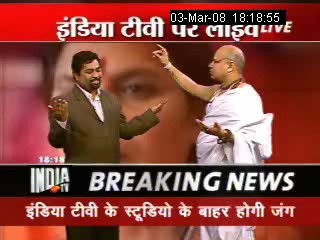

Publicado por primera vez en el Boletín de Rationalist International # 171, 11/3/2008.
Pocas personas han hecho tanto como Sanal Edamaruki para difundir el racionalismo y desenmascarar a los charlatanes. En la India, un populoso país cuyas mayorías viven bajo el temor de cientos de dioses, el racionalismo se ha abierto paso demostrando abiertamente la falsedad de sus magos y demás religiosos. Este escrito es la reseña de una de las más recientes hazañas del presidente de la Asociación Racionalista India y de Rationalist International. Y a propósito ¿cuándo tendrá el mundo hispano a un Sanal Edamaruki? [N. del E.]
El gran reto tántrico

El 3 de marzo de 2008, en un popular show de televisión, Sanal Edamaruki, el presidente de Rationalist Internacional, retó al más “poderoso” mago tántrico hindú (practicante de magia negra) a que le demostrara sus poderes sobre él. Eso fue el inicio de un experimento sin precedentes. Después de que los cantos de mantras (palabras mágicas) y las ceremonias de tantra fallaron, el mago decidió matar a Sanal Edamaruku con “la máxima ceremonia de destrucción” durante una transmisión en vivo de televisión. Sanal Edamaruku aceptó y se sentó en el altar para el ritual de magia negra. La televisión hindú fue testigo de cómo los ratings de audiencia se elevaron hasta el cielo.
Todo inició, cuando Uma Bharati (ex ministra del estado de Madhya Pradesh) acusó a sus oponentes políticos en una declaración pública de usar poderes tántricos para causarle daño. De hecho, con pocos días de diferencia, la desafortunada dama había perdido a su tío favorito, golpeó la puerta de su automóvil contra su cabeza y descubrió sus piernas llenas de heridas y ampollas.
India TV, una de los mayores canales Hindi con más cobertura, invitó a Sanal Edamaruku a una discusión sobre “El Tantra contra la Ciencia”. Pandit Surinder Sharma, quien dice ser el mago de los principales políticos y es bien conocido por sus shows de TV, representó el otro lado. Durante la discusión, el tántrico mostró una pequeña figura humana hecha con harina de trigo, puso un cordón alrededor de ella y la apretó. Declaró que él era capaz de matar a cualquier persona en sólo tres minutos ocupando magia negra. Sanal lo retó a que lo tratara en él.
El tántrico lo trató. Cantó sus mantras (palabras mágicas): “Om lingalingalinalinga , kilikili….”. Pero sus esfuerzos no mostraron ningún impacto sobre Sanal - nada después de tres minutos, y nada después de cinco minutos. Extendieron el tiempo una y otra vez. La discusión original del programa debió de terminar aquí, pero las “noticias de última hora” sobre el gran reto tántrico estaba sobrepasando el calendario de todos los programas.

Ahora el mago tántrico cambió su técnica. Empezó a rociar agua sobre sanal y al blandir un cuchillo frente a él. A veces movía el filo del cuchillo sobre todo su cuerpo. Sanal no se estremeció. Entonces tocó la cabeza de Sanal con su mano, frotando su cabello, presionando su frente, colocando su mano sobre sus ojos, presionándo sus dedos sobre las sienes. Cuando lo presionaba más y más fuerte, Sanal le recordaba que se suponía que sólo debía de utilizar magia negra, no ataques de fuerza para derribarlo. El tántrico tomó un nuevo aire: agua, cuchillo, dedos, mantras. Pero Sanal seguía mostrándose saludable e incluso divertido.
Después de cerca de dos horas, el conductor declaró la derrota del tántrico. El tántrico no la admitió y trató de excusarse diciendo que un dios muy poderoso, que Sanal adora, lo debe de estar protegiendo. “No, yo soy ateo” dijo Sanal Edamaruku. Finalmente, ya caído de la gracia, el tantrico trató de salvar su reputación diciendo que había un hechizo especial de magia negra que nunca fallaba, el de la destrucción máxima, el cual podría sólo ser realizado de noche. Mala suerte ya que no se pudo salir con la suya y lo retaron a probar sus palabras en otro programa de noticias “Breaking News”.

En las siguientes tres horas, India TV emitió promocionales sobre El Gran Reto Tántrico, llamando a varios ciento de millones de personas a sus aparatos de televisión.
El encuentro tuvo lugar en un lugar bajo un cielo nocturno al aire libre. El tántrico y sus dos asistentes estuvieron iniciando un fuego. Sanal estaba de buen humor. Una vez que la magia máxima fuera invocada, ya no habría marcha atrás, el tántrico advirtió. En los próximos dos minutos, Sanal se volvería loco, un minuto después gritaría de dolor y moriría. ¿No querría salvar su vida antes de que fuera demasiado tarde? Sanal rió, y la cuanta regresiva inició. Los tántricos cantaron “Om lingalingalingaling a, kilikilikili… .” seguido de una cascada constantemente cambiante de palabras y sonidos extraños. La velocidad se incrementaba histéricamente. Ellos echaron mano de todo tipo de ingredientes mágicos arrojándolos a la llamas, produciendo diferentes colores, sonidos mientras se chamuscaban y humo blanco. Mientras cantaban, el tántrico se acercó a Sanal, movió sus manos frente a él y lo tocó, pero fue advertido por el conductor. Después de los intentos anteriores del tántrico de utilizar la fuerza sobre Sanal, se le advirtió que mantuviera su distancia y evitara tocar a Sanal. Pero el tántrico “olvidó” esta regla una y otra vez.
Ahora el tántrico escribió el nombre de Sanal en un pedazo de papel, lo rompió en pequeños pedazos, lo sumergió en un recipiente con aceite hirviendo y lo tiró dramáticamente a las llamas. No pasó nada. Cantando y cantando rociaban agua sobre Sanal, restregó un montón de plumas de pavo real sobre su cabeza, arrojó semillas de mostaza al fuego y varias cosas más. Sanal sonrió, nada ocurrió y el tiempo se agotaba. Sólamente siete minutos antes de la medianoche. El tántrico decidió utilizar su arma máxima: el muñeco de harina de trigo. Lo amasó y lo espolvoreó con ingredientes misteriosos, y luego le pidió a Sanal que lo tocara. Sanal así lo hizo, y la gran magia por fin inició. El tántrico perforó con clavos el muñeco, lo cortó salvajemente con un cuchillo y lo tiró al fuego. Para ese momento, Sanal debió de haber sucumbido. Pero no fue así. El rio. Cuarenta segundos, contó el conductor, veinte, diez, cinco… ¡se terminó!
Millones de personas habrán dado un respiro de alivio frente a sus televisores. Sanal estaba bastante vivo. El poder tántrico había fallado miserablemente. Los tántricos crean tal atmósfera tenebrosa que incluso las personas equilibradas, que saben que la magia negra no tiene fundamentos, pueden sucumbir ante el miedo, comentó un científico durante el programa. Se necesita mucho valor y confianza para retarlos y poner la vida de uno en peligro. Haciendo esto, Sanal Edamaruku ha roto el hechizo, y ha disminuido mucho del miedo de aquéllos que presenciaron su triunfo.
Esa noche, una de las supersticiones más peligrosas y extendidas de La India sufrió un gran golpe.
Otro hit para el racionalismo
Después de “El Gran Reto Tántrico”, tocó el turno para el gurú de la Nueva Era. La noche del 15 de marzo de 2008, India TV invitó al “Gurú Hipnótico de la Nueva Era” Sivanand para un programa. Como estaba planeado, Sanal Edamaruku estaba desde el inicio entre la audiencia.
Después de que a los asistentes se les presentara un video lleno de imágenes confusas, vaivenes de péndulo, música psicodélica y humo artificial saliendo de ambas partes del podio, el gurú Sivanand inicia su programa.
Al descubrir que Sanal estaba en primera fila, trato de anticiparse y dijo que su hipnosis no era ni tantra, ni mantra, sino una forma científica de la Nueva Era para asegurar fuerza y resistencia instantánea. Él declaró que podía hacer a una persona inteligente, lista y físicamente poderosa. Sus clientes siempre obtenían poder e inteligencia segundos después de haber sido hipnotizados, aseguró el gurú.
Después eligió a dos sujetos para su demostración de entre la audiencia invitada - una joven y un joven, ambos en sus veintes.
El gurú hipnótico tocó sus frentes y les dijo que se relajaran y cayeran en sueño profundo. Contó hasta tres y ambos en apariencia dormían. Ellos estaban de pie hasta que los sentaron en dos sillas. En adelante, el gurú cambiaba constantemente de interlocutor entre el conductor del programa, la audiencia y sus sujetos. Muy pronto la joven se convirtió en el único foco de atención, mientras que el rol del joven se limitó a ser una pieza dormida de decoración durante todo el programa.
Sus clientes, explicó el gurú hipnótico, venían a él para obtener fuerza y confianza, para perder estrés y desarrollar sus poderes de fuerza de voluntad y control mental, y su porcentaje de éxito era de 90. Entre sus posturas él se dirigió a la joven con órdenes como “te vuelves más fuerte… y más fuerte… ahora… uno, dos, tres”, “poder… poder” etc. Después de un rato, le pidió que levantara su brazo, y ella lo hizo. Ella parecía entender claramente cuáles de todas sus frases eran para el conductor, cuáles eran para la audiencia y cuáles eran para ella. El gurú hipnótico incluso le permitía al conductor pedirle a ella que narrara sus experiencias acerca del mar y las montañas y sorpresivamente ella lo hacía.
El gurú hipnótico inició entonces su grand finale. La joven fue acostada sobre las dos sillas, la parte media de su cuerpo permaneció recta sin ningún soporte. Ésta era la prueba final del gurú hipnótico. “¡Esto sólo es posible bajo la hipnosis!” declaró de manera triunfal, ya que la hipnosis podía desatar capacidades insospechadas del cuerpo humano. Para coronar su éxito, llamó a un joven de la audiencia y le pidió subirse y pararse cuidadosamente en sus muslos. Ella permaneció estable. Después de un minuto bajaron al chico.
Sanal Edamaruku subió al podio y en ese momento dijo: “Ésto no tiene nada que ver con hipnosis”. Dijo: “Ésta es una capacidad normal del cuerpo humano y puedo mostrar el mismo efecto sin hipnosis”. A petición suya, un adulto aceptó ser voluntario para el programa. Sanal lo acomodó en tres sillas, la primera en su cabeza, la segunda en su cadera y la tercera en sus piernas. “Ten confianza”, le dijo Sanal y quitó la silla que estaba bajo sus caderas. Para sorpresa de todos, el hombre se mantuvo estable sin caer. “No está hipnotizado” , dijo Sanal. “Las caderas humanas tienen la fuerza y sólo necesitamos confianza para permanecer sobre dos sillas sin caer”.
Sanal entonces le pidió al mismo chico que se parara en los muslos del hombre. Si… funcionó sin hipnosis. El voluntario no se cayó, y dijo que se estaba sintiendo bien. Hubo un gran aplauso espontáneo por parte de la audiencia. Más gente quiso intentar. Y mientras el juego continuaba, Sanal Edamaruku dijo que eso probaba que el gurú hipnótico era un charlatán.
En primera, hubo una larga lista de desperfectos y errores en su “hipnosis”, que contradecían el conocimiento médico y la experiencia, haciendo evidente que su demostración era un drama. Un psiquiatra en la audiencia respaldó ésta observación y agregó unos puntos. En segunda, Sanal Edamaruku continuó, el sujeto de su demostración no fue elección libre, como se pretendió, sino alguien bien conocido por él, preparó el programa y estaba actuando. Sanal Edamaruku y otras personas fueron testigos de la sobre-entusiasmada joven telefoneando a algunos amigos antes del inicio del programa y anunciando orgullosamente “su programa”. Además, de éstas conversaciones se supo que ¡ella era una actriz amateur que acababa de aprobar su exámen de ingreso a la escuela para actores “Delhi School of Drama”!
El gurú hipnótico Sivanand no tenía educación médica o psiquiátrica y estuvo practicando esta charlatanería en varios miles de personas a través de los años.
Aunque el programa de dos horas y media terminó ahí, la audiencia no se quería ir a casa, querían felicitar a Sanal Edamaruku por el desenmascaramiento y querían bombardearlo con tantas preguntas que siempre quisieron preguntar pero no sabían a quién hacerlo.
Volver a la sección Escepticismo
Comentarios
Comments powered by Disqus